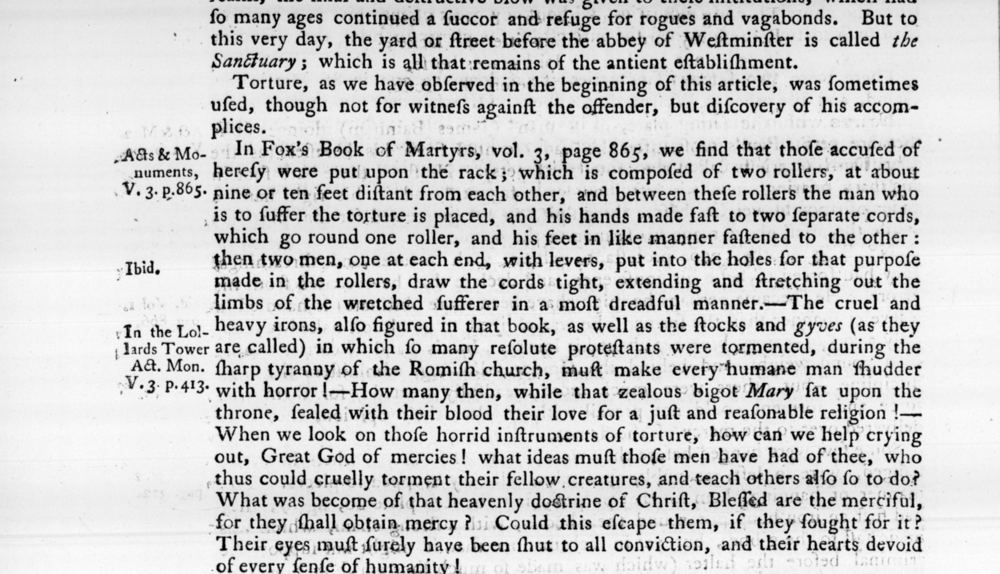
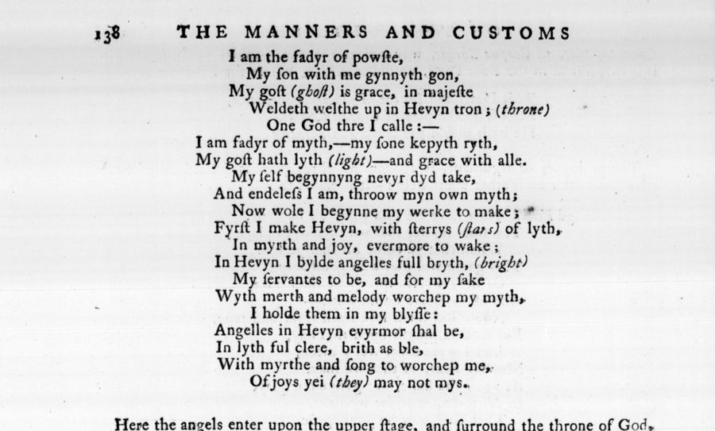

The rack, after Foxe (vol. III, p. 46)
English: London 1776, vol. III, p. 46, scan n49, with Strutt’s marginal references to Foxe’s Acts and Monuments.

Torture, as we have observed in the beginning of this article, was sometimes used, though not for witness against the offender, but discovery of his accomplices.
In Fox’s Book of Martyrs, vol. 3, page 865, we find that those accused of heresy were put upon the rack; which is composed of two rollers, at about nine or ten feet distant from each other, and between these rollers the man who is to suffer the torture is placed, and his hands made fast to two separate cords, which go round one roller, and his feet in like manner fastened to the other: then two men, one at each end, with levers, put into the holes for that purpose made in the rollers, draw the cords tight, extending and stretching out the limbs of the wretched sufferer in a most dreadful manner.—The cruel and heavy irons, also figured in that book, as well as the stocks and gyves (as they are called) in which so many resolute protestants were tormented, during the sharp tyranny of the Romish church, must make every humane man shudder with horror!—How many then, while that zealous bigot Mary sat upon the throne, sealed with their blood their love for a just and reasonable religion!—When we look on those horrid instruments of torture, how can we help crying out, Great God of mercies! what ideas must those men have had of thee, who thus could cruelly torment their fellow creatures, and teach others also so to do? …
Lecky’s note 156 supports his remark on the extent to which torture “was employed by the Catholics, under Mary, in the trials of Protestants”. Strutt’s evidence is Foxe, as his margins show (“Acts & Monuments, V. 3. p. 865”; “In the Lollards Tower, Act. Mon. V. 3. p. 413”).
God on the upper stage: the Coventry play (vol. III, pp. 137–140)
English: London 1776, vol. III, pp. 137–140, scans n140–n143.
On p. 137 (OCR) Strutt introduces “the Coventry play, of Corpus Christi”, “anciently a very popular performance”, citing the Pardoner in “the Four Pee’s, an old interlude”: “This Devil and I were of old acquaintaunce, For oft in the play of Corpus Christi, He hath play’d the Devil at Coventrie.” He then transcribes “the whole of the first pageant”, which opens with God speaking: “Ego sum alpha et omega, principium et finis. My name is knowyn, God and Kynge …”. On p. 138 God continues:

I am the fadyr of powste,
My son with me gynnyth gon,
My gost (ghost) is grace, in majeste
Weldeth welthe up in Hevyn tron; (throne)
One God thre I calle:—
I am fadyr of myth,—my sone kepyth ryth,
My gost hath lyth (light)—and grace with alle.
My self begynnyng nevyr dyd take,
And endeless I am, throow myn own myth;
Now wole I begynne my werke to make;
Fyrst I make Hevyn, with sterrys (stars) of lyth, …Here the angels enter upon the upper stage, and surround the throne of God, singing “To thee all angels cry aloud:—the Heavens and all the powers therein:—to the cheribin and seraphin; continually do cry, Holy, holy, holy, Lord God of Saboth.”—This finished, the Devil speaks:
Lucifer. To whos worchipe synge ye this songe,
To worchip God, or reverence me?
But (unless) ye worchip me, ye do me wronge,
For I am the wurthyest that evyr may be.
Lecky’s note 119 is attached to “the representations of the Almighty that were so frequent upon the stage”, which, he says, “though inexpressibly shocking in our eyes, were perfectly in harmony with the intellectual condition of the time”. The interlude Strutt quotes is John Heywood’s The Four PP. Strutt’s “Coventry play” is the cycle now usually called the N-Town plays (his proclamation ends “In N. town”).
Further down the rabbit hole
Sources that Lecky cites in the notes next to the ones that cite this page.
- Barrington, Observations on the More Ancient StatutesHenry VIII’s 72,000 hangings, and why English thieves had “better hearts”
- Simancas, De Catholicis InstitutionibusAn inquisitor’s handbook: no faith with heretics, and torture
- Malone, Historical Account of the English StageAdam and Eve on the medieval stage
- Buckle, History of Civilization in EnglandWeather, superstition and the town (pp. 344–347)
- Concina, Adversus usuram and De spectaculisA Dominican against interest and against the stage: the pope’s own polemicist
- Llorente, Histoire critique de l’Inquisition d’EspagneHow many did the Spanish Inquisition burn? Its former secretary counts
Backlinks
Every place in Rationalism in Europe that links to this page (generated automatically when the site is built).